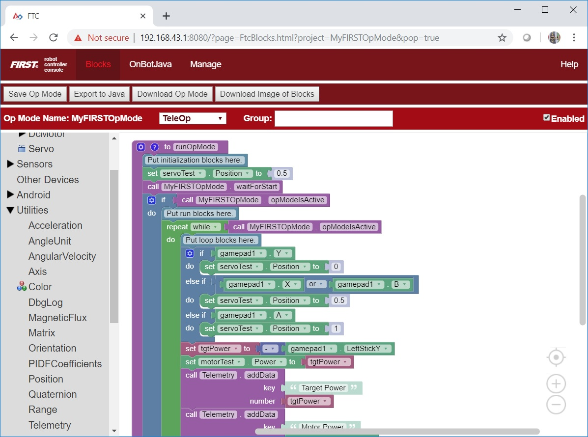
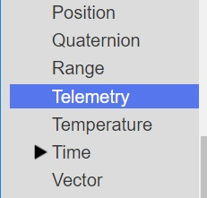
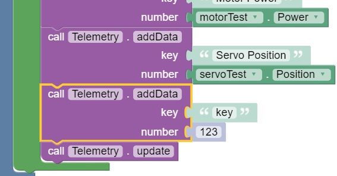
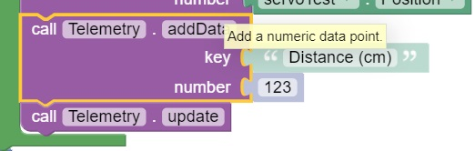
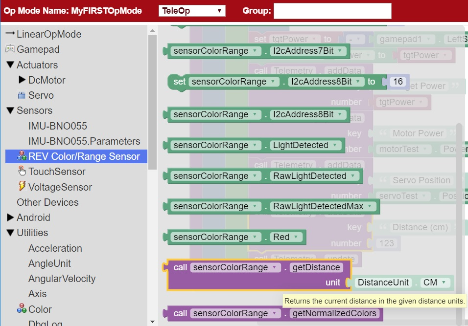
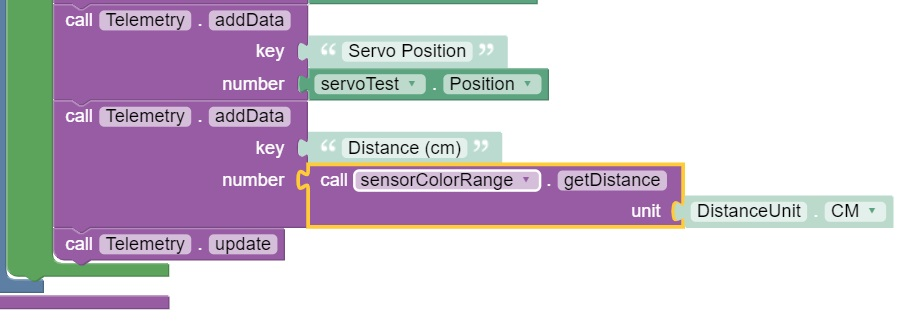
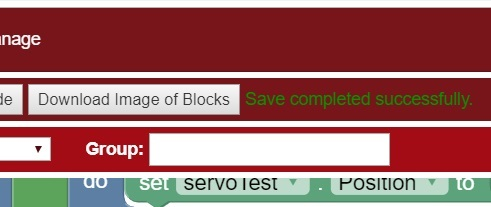
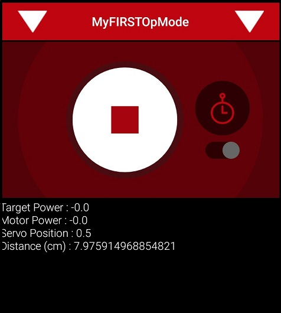

Using Sensors Blocks
Color-Distance Sensor
A sensor is a device that lets the Robot Controller get information about its environment. In this example, you will use a REV Robotics Color-Distance sensor to display range (distance from an object) info to the DRIVER STATION.
The Color-Range sensor uses reflected light to determine the distance from the sensor to the target object. It can be used to measure close distances (up 5” or more) with reasonable accuracy. Note that at the time this document was most recently edited, the REV Color-Range sensor saturates around 2” (5cm). This means that for distances less than or equal to 2”, the sensor returns a measured distance equal to 2” or so.
Note that it will take an estimated 15 minutes to complete this task.
Modifying the Op Mode to Display Distance Instructions
1. Verify that your laptop is still connected to the Robot Controller’s Program & Manage Wi-Fi network.
2. Verify that “MyFIRSTOpMode” is opened for editing. If it is not, you can click on the FIRST logo in the upper left hand corner of the browser window on the laptop. This should take you to the main Blocks Development Tool project screen.
Click on the “MyFIRSTOpMode” project to open it for editing if it is not already opened.
3. Click on the “Utilities” category on the left-hand side of your browser. Find and click on the “Telemetry” subcategory.
4. Select the “call telemetry.addData” block (the numeric version) and drag it to the spot in your “while” loop block immediately before the “telemetry.update” block.
5. Click and highlight the “key” text and change the text so it reads “Distance (cm)”.
6. Click and expand the “Sensors” category. Click on the “REV Color/Range Sensor” subcategory. Click on and select the “call sensorColorRange.getDistance” programming block.
Note that earlier versions of the Blocks Programming tool refer to the REV Robotics Color-Distance Sensor as the “LynxI2cColorRangeSensor”. Newer versions of the software refer to the device as the “REV Color/Range Sensor”.
7. Drag the “call sensorColorRange.getDistance” programming block to the “number” field of the “call telemetry.addData” programming block.
This will send the measured distance to the target in centimeters back to the DRIVER STATION.
8. Save your op mode and verify that it was saved successfully to the Robot Controller.
9. Follow the procedure outlined in the section titled Running Your OpMode to run your updated op mode.
As you run the op mode, if you move your hand above the color light sensor, you should see the measured distance change on the DRIVER STATION screen. If the expression “NaN” (not a number) is displayed on the DRIVER STATION, the target is most likely out of range (and the sensor does not detect any reflected light).
Touch Sensor
For this example, we assume that the REV Robotics Touch Sensor has been configured as a digital touch sensor in the Robot Controller’s active configuration file. We will use the “isPressed” programming block to determine if the button on the sensor is currently pressed or not.

The Control Hub or Expansion Hub digital ports contain two digital pins per port. When you use a 4-wire JST cable to connect a REV Robotics Touch sensor to a Control Hub or Expansion Hub digital port, the Touch Sensor is wired to the second of the two digital pins within the port. The first digital pin of the 4-wire cable remains disconnected.
For example, if you connect a Touch Sensor to the “0,1” digital port of the Control Hub or Expansion Hub, the Touch Sensor will be connected to the second pin (labeled “1”) of the port. The first pin (labeled “0”) will stay disconnected.
Note that it will take an estimated 15 minutes to complete this task.